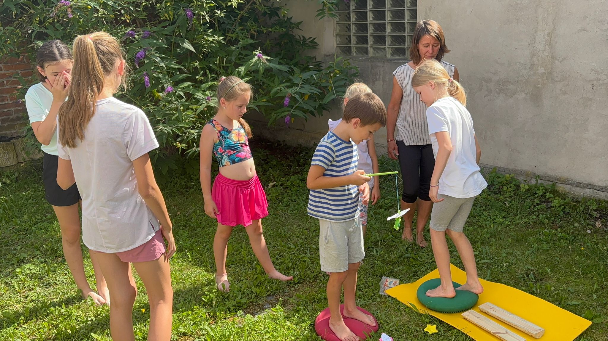
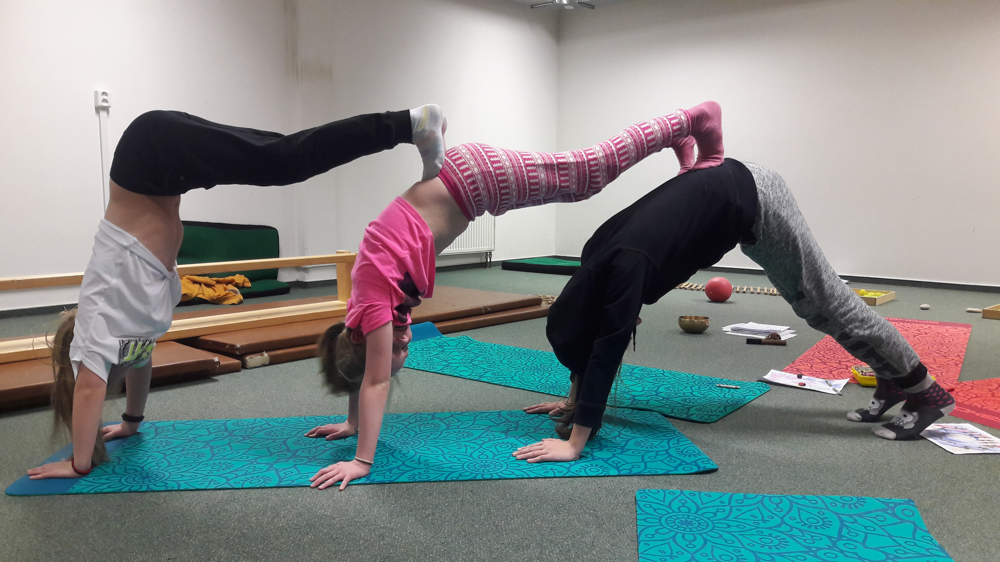
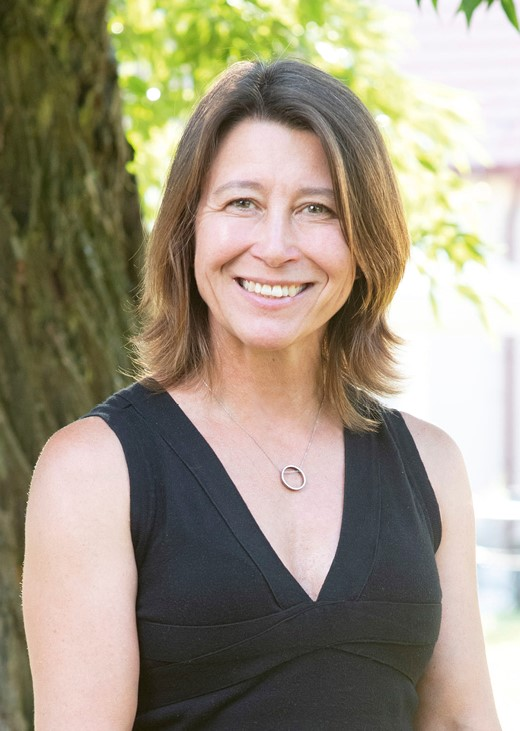
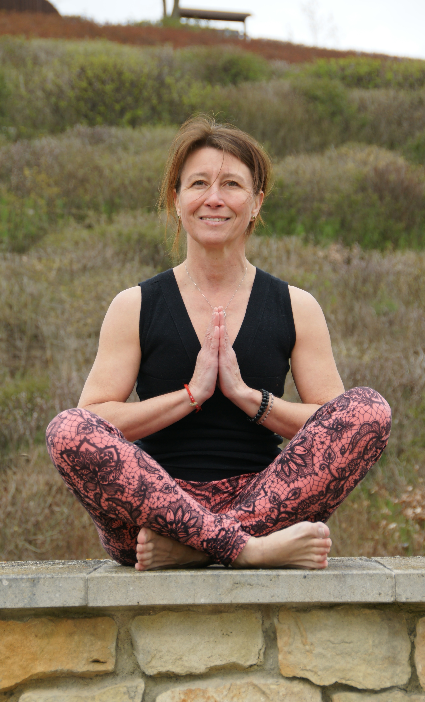

TEENJÓGA není zaměřená na výkon ani na dokonalé pozice. Podporuje zdravý vývoj dospívajících, správné držení těla, budování sebevědomí a zvládání stresu, to vše v bezpečné a přátelské atmosféře. A je hravá.
Není zaměřená na výkon ani dokonalé pozice, ale na podporu zdravého vývoje dospívajících, budování sebevědomí, správné držení těla a zvládání stresu v bezpečné a přátelské atmosféře. Je hravá.
TEENJÓGA přináší výhody jógových praktik do vzdělávání. Pomáháme školám integrovat jógové praktiky do školních aktivit.
Lekce jógy lze snadno začlenit do školního rozvrhu. Mohou probíhat jako jednorázové workshopy, pravidelné kroužky, součást hodin tělesné výchovy nebo krátké relaxační bloky během školního dne. Délku i obsah je možné přizpůsobit potřebám školy, věku žáků i časovým možnostem jednotlivých tříd. Připravujeme řešení a postupy šité na míru vašim potřebám.
Program je vhodný především pro žáky 2. stupně základních škol a studenty středních škol. Obsah lekcí respektuje věkové zvláštnosti dospívajících a zaměřuje se na podporu zdravého pohybu, správného držení těla, zvládání stresu, budování sebedůvěry a pozitivního vztahu k vlastnímu tělu.
Jóga jako součást školního dne přináší dětem a dospívajícím možnost zastavit se, protáhnout tělo a zklidnit mysl. Nejde však pouze o samotné cvičení. Jóga propojuje pohyb, vědomý dech a relaxaci, čímž podporuje celkovou fyzickou i psychickou pohodu žáků. V dnešní době, kdy jsou mladí lidé často vystaveni vysokým nárokům, informačnímu přetížení a stresu, může být několik minut jógy cenným prostorem pro regeneraci a načerpání nové energie.
Pravidelné zařazení jednoduchých jógových pozic pomáhá kompenzovat dlouhé sezení v lavicích, zlepšuje držení těla a podporuje zdravý pohybový rozvoj. Stejně důležitou součástí jógy jsou však dechová cvičení, která učí děti pracovat s pozorností, zklidnit se v náročných situacích a lépe zvládat emoce. Vědomé dýchání dokáže během několika minut snížit napětí a pomoci navrátit soustředění před další výukou.
Nedílnou součástí jógy je také relaxace. Krátké chvíle odpočinku vedou žáky k tomu, aby vnímali své tělo, rozpoznávali únavu a učili se efektivně regenerovat. Relaxační techniky mohou přispět ke zlepšení koncentrace, spánku i celkové atmosféry ve třídě. Jóga tak nabízí mnohem více než jen pohybovou aktivitu. Rozvíjí schopnost naslouchat sobě samému, podporuje duševní odolnost a vytváří zdravé návyky, které mohou děti provázet po celý život.
Výzkumy ukázaly, že jóga zlepšuje soustředění, klid, sociální soudržnost a celkovou pohodu. Školy, které jógu zavádějí, uvádějí zlepšení v chování studentů i zlepšení studijních výsledků.
Tento školní rok se můžeme potkat na dvou místech v Praze.
Konkrétní termíny a časy vypsaných lekcí sem doplníme. Tato část bude spravovaná přes redakční systém, aby šla průběžně aktualizovat.


Místo pro články, tipy a myšlenky k józe pro dospívající.
Obsah této sekce bude spravovaný přes redakční systém, aby šel doplňovat průběžně bez zásahu do kódu stránky.

Jmenuji se Petra Petrů a jsem maminka dvou báječných kluků, dnes už vysokoškoláků.
Sama jsem vystudovala ekonomický obor na VŠE. Nicméně protože se můj mladší syn narodil s pohybovým handicapem a od narození jsem s ním rehabilitovala, společně jsme objevili kouzlo dětské jógy pod vedením Hanky Luhanové. A já jsem postupně pod hlavičkou ČADJ absolvovala první semináře.
Za to vděčím nejspíš mojí mamince. Celý život se ráda hýbe. Mimo jiné cvičí jógu v systému Jóga v denním životě víc než 40 let.
A já se také ráda hýbu. Celé dětství i dospívání jsem závodně šermovala. A protože šerm jednostranně zatěžuje tělo, učili nás trenéři kompenzační cviky inspirované Jiřím Čumpelíkem.
Po narození dětí jsem se potkala s Olinou Tajovskou a dlouhá léta jsem chodila na její lekce. Velmi se mi líbí její přístup. Další velikou inspirací je pro mě Lucka Königová. Několik letních týdnů jsem strávila v Hlavici, kde jsem poznala další podoby jógy, vedle jiných semináře Jóga v rehabilitaci Martiny Ježkové.
Zaměřujeme se na vnímání těla a jeho správné držení, na rovnováhu, která teenkám dodá přirozené sebevědomí a pomůže jim respektovat sebe i své okolí. Učíme se také odpočívat.
Hodiny jsou hravé, doplněné o balanční cvičení na nestabilních plochách a jsou vždy přizpůsobeny momentální náladě, potřebám a rozpoložení skupinky.
Některé děti ze skupinek tříleťáků jsem postupně dovedla až do puberty. A tu jsem zjistila, že mě tato věková kategorie v posledních letech baví nejvíc. V současné době tedy vedu lekce teenjógy, a to pouze pro dívky.
Mladé slečny se naučí lépe vnímat své tělo, stanovovat si hranice, učíme se cviky na protažení zkrácených partií, uvolnění napětí a cviky na posílení oslabených částí těla. Provádím slečny meditací i relaxací, stanovujeme si záměr, zkoušíme sílu muder a manter.
Nabízím slečnám cviky proti plochonoží, cviky na nestabilních plochách a prvky, které můžou zařadit do běžného dne, třeba při čekání na autobus nebo ve frontě na oběd. Věřím, že to mladé slečny baví a naše společná setkání jsou jim zároveň k užitku.
Otlaky, drápovité prstce, vadné postavení pat, plochonoží, zarůstající nehty. V průběhu prvních dvanácti let se noha stává pevnou a klenutou. V dospívání ale dochází k výrazným změnám: děti rychle rostou a kosti rostou rychleji než svaly a vazy, což vede k jejich oslabení.
„Naše nohy nás nosí celý život. Nesou váhu celého těla.“
Umožňují nám vykonávat spoustu různých činností a aktivit. Díky nohám chodíme, běháme, skáčeme, jezdíme na kole, lyžujeme, bruslíme. A podle toho bychom se k našim nohám měli chovat, a to od nejranějšího dětství až do dospělosti a stáří.
To je právě jeden z důvodů, proč doplňuji lekce o cvičení na nestabilních plochách a o cviky proti plochonoží. A druhým důležitým důvodem je, že to teenky prostě baví.
Zdroj údajů o vývoji nohy: web Lékařského podiatrického centra.
Vypisuji ty pro mě nejdůležitější.
Pravidelně se účastním Setkání cvičitelů dětské jógy.
Samostatně vedu kurzy dětské jógy a cvičení na balančních pomůckách od roku 2013.
Předtím jsem vedla odpolední kroužky v družině na ZŠ Křimická, Praha 15, pod patronací podiatrické ambulance v Praze 15.
S podiatrickou ambulancí spolupracuji dodnes. Pondělní a čtvrteční kurzy vedu na poliklinice Petrovice, ve středu mám lekci v DoměUm Praha 15.
Máte-li jakékoli dotazy k józe pro teens, k programům pro školy, bosé turistice nebo se potřebujete doptat na obecné otázky, račte psát nebo volat.
